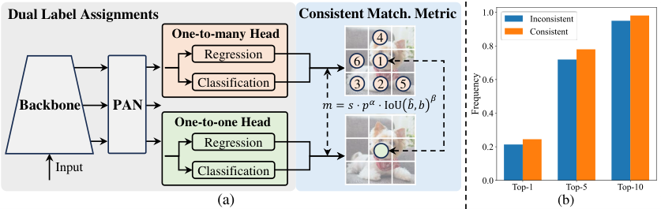

Computer vision · Video
Weapon Detection & Blur
Detect firearms in images or film clips and blur the detected regions automatically.

What you’ll build
Adapt a pretrained detector to one firearm class, choose a confidence threshold and apply blur to its predicted boxes.
Model and adaptation
COCO-pretrained YOLOv10S with a trainable detection head; the course trains both detection branches.
YOLOv10 is the reference real-time detection family. Its COCO benchmark scores describe general object detection; firearm accuracy and film-domain transfer must be measured separately.
Data
Training
Firearm-related action recognition and object detection data, converted to YOLO boxes; include negative frames without weapons.
Evaluation
Held-out videos or scenes, with all related frames kept together; use separate clips to demonstrate blur.
How to measure success
- mAP@50:95 ↑
- Detection quality across several box-overlap thresholds.
- Miss rate ↓
- Fraction of annotated firearms the detector misses.
- False positive rate ↓
- Fraction of weapon-free frames with at least one detection.
- Latency ↓
- Processing time measured on the chosen hardware and pipeline.
What to submit
- A trained detector with a validation-selected threshold.
- An image or video demo with detected objects blurred.
- A test report covering misses, false alarms and processing speed.
- Examples of difficult scenes, small objects and occlusion.